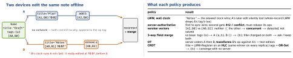

architecture · folio
In one line: A sync engine keeps replicas (phones, tablets, the server) that accept writes offline and must end in the same state. Record operations, not snapshots, in a durable log; apply them idempotently; detect concurrency with versions or vector clocks (never wall clocks); resolve it with a named policy — server-authoritative, LWW, field merge, OT (a server orders and transforms) or CRDTs (merge is mathematically order-free); keep deletes as tombstones.
Download PDF Print view LaTeX source


The engine
- Local store = truth; each write also appends an op
{opId: UUID, entity, id, field, value, baseVersion}to a durable outbox in the same transaction. Ops (intent: “add tag b”) merge better than snapshots (“tags = {a,b}”). - Push: send ops in order; the server applies each once —
opIdis the idempotency key (at-least-once delivery + idempotent apply = effectively once) and stamps a monotonic server revision. - Pull:
GET /changes?since=<cursor>→{changes, cursor, hasMore}; the cursor is a server revision, never a timestamp. Apply + store the new cursor in one transaction. Cursor too old (GC’d) → 410 Gone → full resync. - Rebase: remote changes arrive while local ops are pending → apply remote, replay pending ops on top (like
git rebase) so the UI shows local intent. - Tombstones: a delete is a row
deleted=true, version=n, synced like any change. GC only when every replica has seen it (causal stability) or after a TTL longer than the max offline window — else an old device resurrects the row.
Clocks — detection, not decoration
- Wall clock: users and NTP move it; skew of minutes is normal. Display only.
- Lamport: counter; on send
c+=1, on receivec=max(c,msg)+1. Causal ⇒ smaller, but a smaller number does not prove causality — cannot detect concurrency. Total order with a replica-id tie-break. - Vector clock / version vector: one counter per replica.
V1 ≤ V2in every slot ⇒ V1 happened-before; neither ⇒ concurrent. Cost: grows with replicas (per device, not per user) — prune retired devices. - HLC (hybrid logical clock):
(max physical seen, logical counter)— stays close to real time, monotonic even when the device clock jumps back, fits in 64 bits; a good LWW timestamp.
Example — the two smallest CRDT merges
struct GCounter: Hashable { // grow-only counter
var slots: [String: Int] = [:] // replicaId -> count
var value: Int { slots.values.reduce(0, +) }
mutating func inc(_ r: String) { slots[r, default: 0] += 1 }
func merged(_ o: GCounter) -> GCounter { // join = max per slot
GCounter(slots: slots.merging(o.slots, uniquingKeysWith: max)) }
}
struct ORSet<E: Hashable> { // observed-remove set
var adds: [E: Set<UUID>] = [:]; var removed: Set<UUID> = []
mutating func add(_ e: E) { adds[e, default: []].insert(UUID()) }
mutating func remove(_ e: E) { removed.formUnion(adds[e] ?? []) }
var elements: Set<E> { // alive = a tag not removed
Set(adds.filter { !$0.value.subtracting(removed).isEmpty }.keys) }
} // merge: union adds, union removed -> concurrent add WINSTraps
- “Newest timestamp wins” with device clocks — skew picks the winner.
- Lamport order ≠ causality: it can’t tell “after” from “concurrent”.
- Hard delete locally — the delete never syncs; the row comes back.
- Counter as a plain
Int“+1” replayed on retry — double count; use op ids or a G-Counter. - CRDT ≠ correct: it converges to a state — maybe not the one users meant (invariants like “stock ≥ 0” need a server).
- Cursor = “last sync time”: a row committed late with an older timestamp is skipped forever.
CRDTs — why they converge
- State-based (CvRDT): replicas ship state;
mergeis a join — commutative, associative, idempotent — so any order, any duplicates, same result. Op-based (CmRDT): ship ops that commute; needs causal, exactly-once delivery. - G-Counter: slot per replica, value = sum, merge = max per slot (a single int would double-count on re-merge). PN-Counter = two G-Counters (P - N): likes.
- LWW-Register:
(value, timestamp, replicaId), larger wins — deterministic, still loses an edit by design. Use an HLC, notDate(). - OR-Set: every add gets a unique tag; remove deletes only the tags it observed → a concurrent add survives (add-wins). Tombstoned tags = metadata that grows until GC.
- Text / JSON: sequence CRDTs (RGA, YATA) give each character an id and order — Yjs, Automerge. Cost: metadata per character, history kept.
OT vs CRDT
| OT | CRDT | |
|---|---|---|
| idea | rewrite op B against A: ins(5) after ins(2,"xy") → ins(7) | data type whose merge is order-free |
| needs | a central server to order ops | nothing — peer-to-peer, offline for weeks |
| cost | transform functions, hard to prove | metadata + tombstones grow |
| seen in | Google Docs–style editors | local-first apps, Yjs, Automerge |
Pick the policy per field, not per app
| one user, many devices | field-level LWW on an HLC — rare conflicts, cheap |
| money · stock · bookings | server-authoritative: reject + rebase (invariants) |
| likes, counts | increment ops with op ids, or a PN-Counter |
| tags, members | OR-Set semantics (add wins) |
| shared text | sequence CRDT, or OT behind a server |
| files, blobs | keep both: “conflicted copy” + let the user pick |
Apple’s example — CloudKit
NSPersistentCloudKitContainer: mirrors a Core Data store to CloudKit record zones. Model rules: no unique constraints, every relationship optional + has an inverse (records arrive out of order), no Deny delete rule. After promoting to production the schema is add-only — never rename or delete a field.- Conflict detection: each
CKRecordcarries a change tag; saving a stale copy →CKError.serverRecordChanged(the server’s record in the error). CKSyncEngine(iOS 17 / macOS 14): your own store; the engine schedules send/fetch, batches your pending changes (nextRecordZoneChangeBatch), and hands you a state blob to persist;serverRecordChangedis yours to resolve.